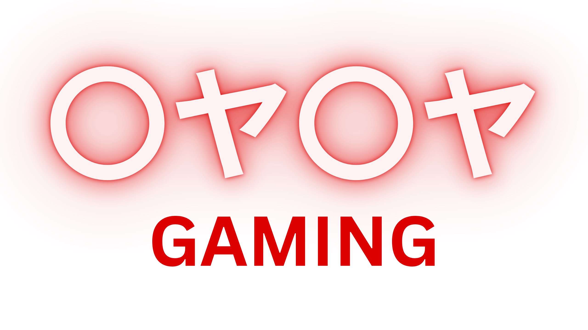

Daily Energy


Watch the unfiltered vibe: Gaming Base Post
The HQ of hustle, edits, and everyday vibes. Here's where legends cool down, reload, and get real.
The Gaming Base is the behind-the-scenes space for 〇ヤ〇ヤ. It’s less about combat and more about connection. You’ll find edit drops, meme clips, daily vibes, game recaps, and team life. It’s where raw moments live before they go viral.
Watch the unfiltered vibe: Gaming Base Post
Whether it’s someone raging over lag, syncing edits at 2AM, or vibing over a win — the Base is where you get to know the team as they are. No filters, no scripts. Just love, laughs, and loyalty.
Every legend starts somewhere, and mine began with a simple love for games and storytelling. From early days spent glued to screens, navigating pixelated worlds, I dreamed of more than just playing — I wanted to create, to inspire, and to build something lasting. The journey wasn’t easy. Balancing school, work, and personal struggles, I learned that passion without discipline fades fast. So I doubled down, learning web and graphic design, mastering editing skills, and pushing my limits every day.
The Gaming Base is a reflection of that journey — raw, real, and unfiltered. It’s a place where creativity meets hustle; where late nights aren’t complaints but badges of honor; where each meme, edit, and clip tells a story not just about the game, but about life behind the scenes.
I’ve faced setbacks, felt frustration when things didn’t click, but what kept me going was the community — the ones who watched every drop, the team who fought alongside me, and the fans who believed before I even did. Today, 〇ヤ〇ヤ Gaming Base isn’t just a hub; it’s a home. A place where dreams become plans and plans become reality.
As I keep grinding, I invite you to be part of this story — to witness the wins, the fails, and every step in between. Because at the end of the day, it’s more than gaming — it’s about the journey we share.

Gaming is the battlefield. The Gaming Base is the chill zone. One shows the fight; the other shows the family.
We drop whenever the moment hits. Expect anything from behind-the-scenes to quick skits or full breakdowns.
YouTube Community:
Gaming Base Post
Facebook:
Post 1,
Post 2